Every part, scanned on its own.
The arm was dismantled down to its last piece and every part was scanned on its own. That way the surfaces hidden inside the assembled robot, such as bearing seats, bolt circles and the gears inside the reducers, are captured too. The picture above shows the scans put back together, with one colour per part. Each finished scan is a mesh of about one to three million triangles. The lowest part of the arm is missing from the scan files shown here.
From scans to a working robot.
The scans were the reference for the CAD drawings: they gave the real geometry of each part to work from. With that in hand, new motors were bought, some parts were CNC cut, and the robot was rebuilt.
The structure.
The load-carrying castings and their covers, from the shoulder end to the wrist.
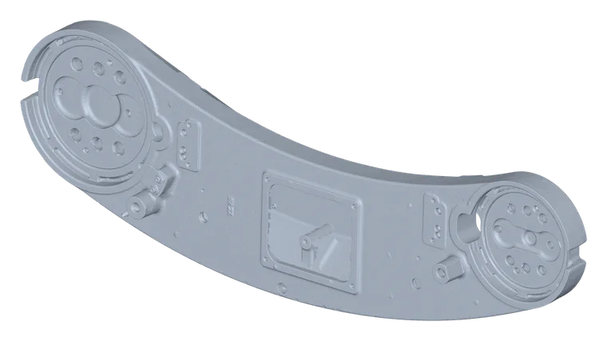
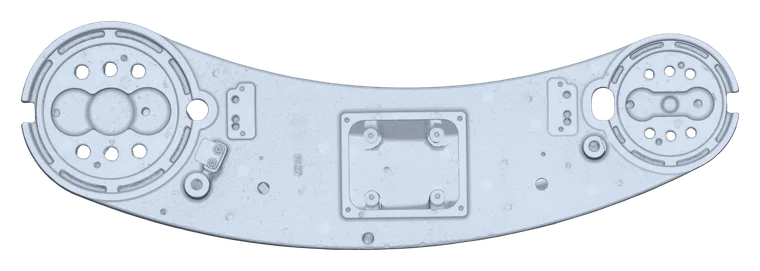
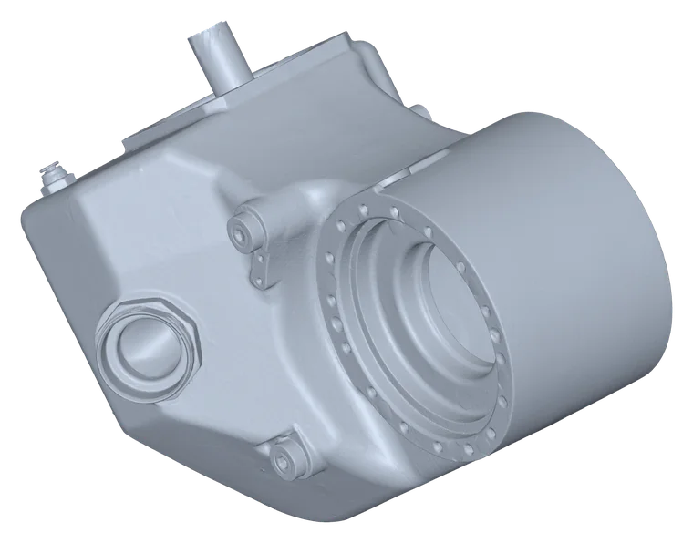
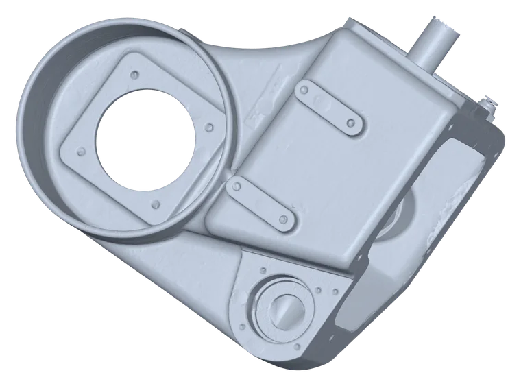
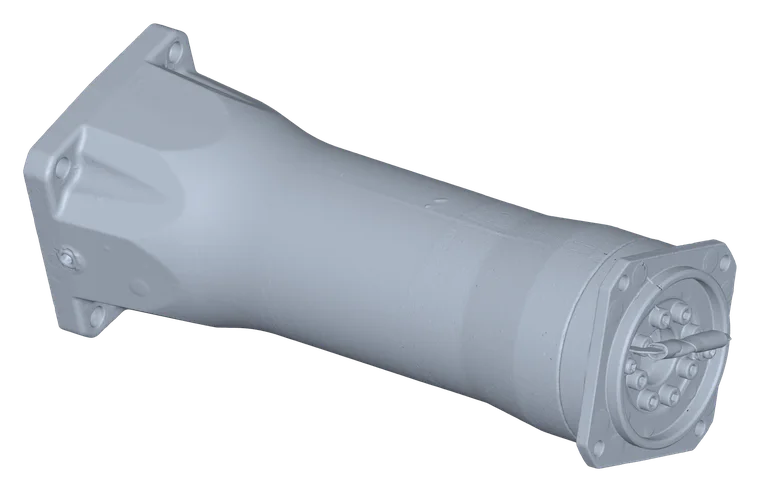
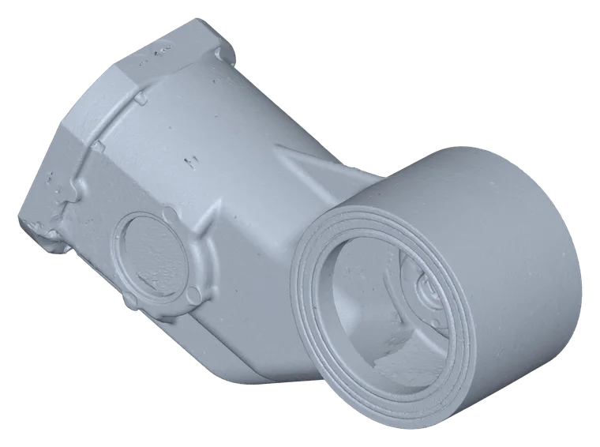
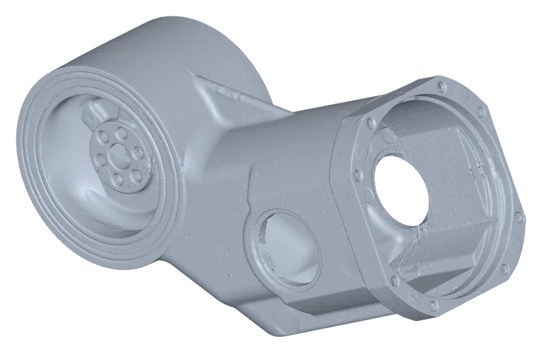
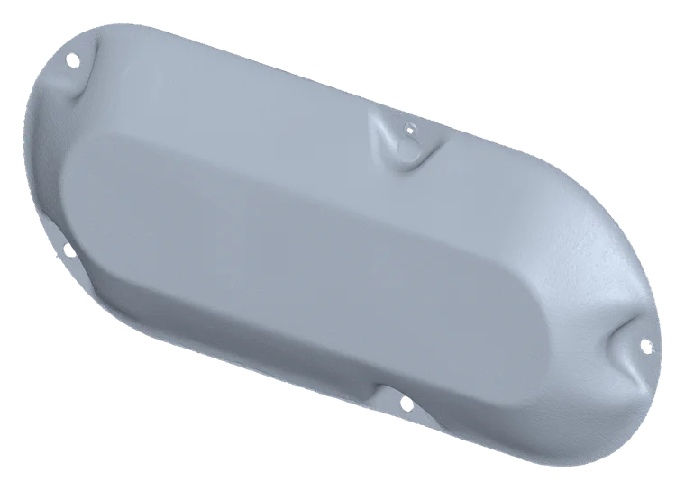
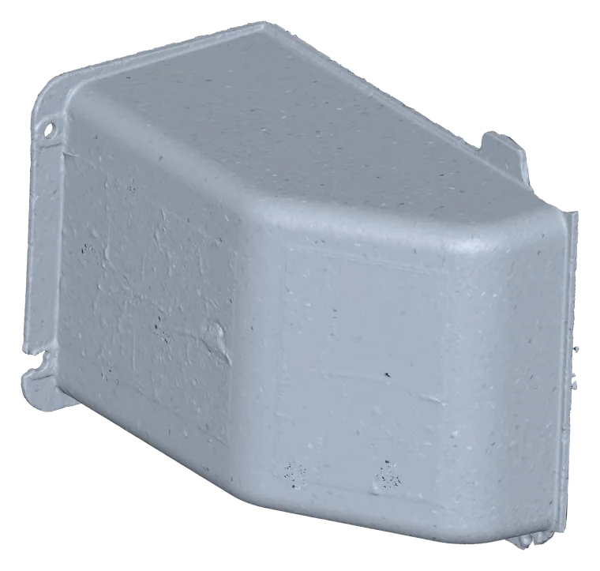
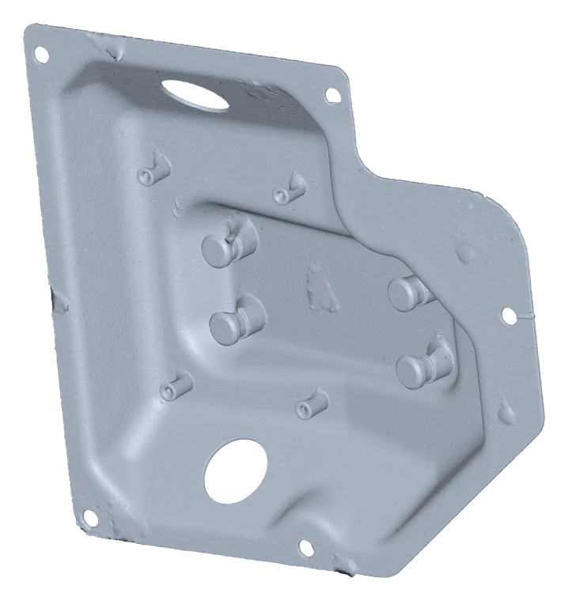
The drives.
The reducers and motors are grouped here by size, largest first. Which joint each one drives was not recorded, so the pairing is by size only.
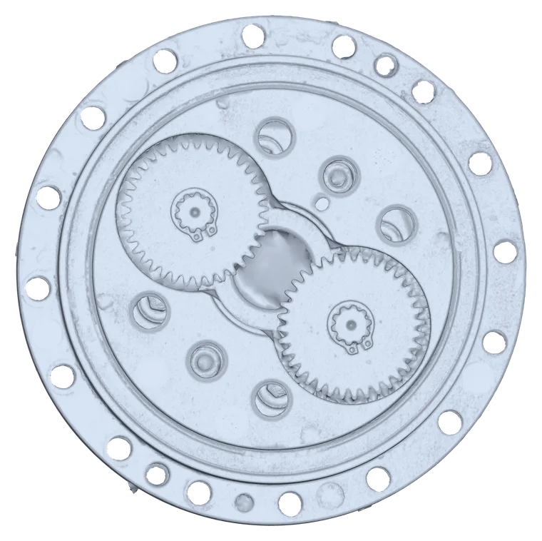
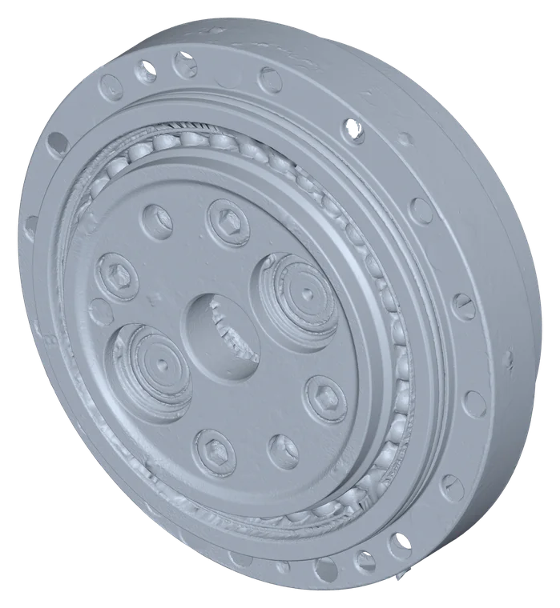
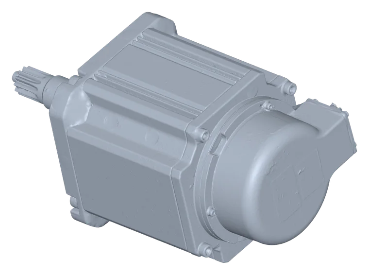
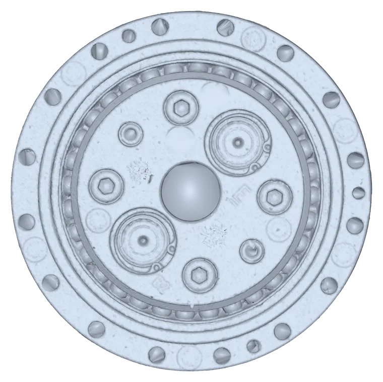
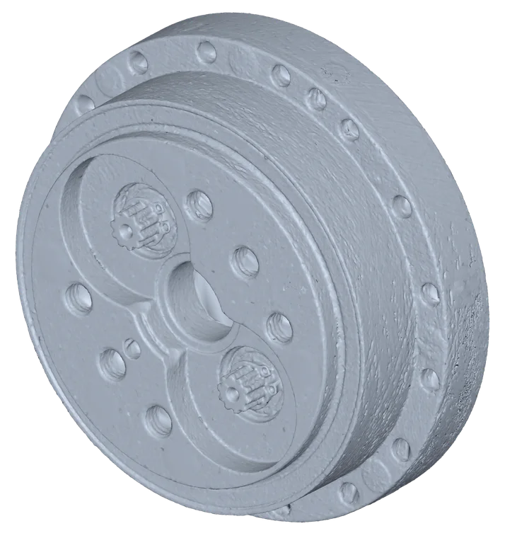
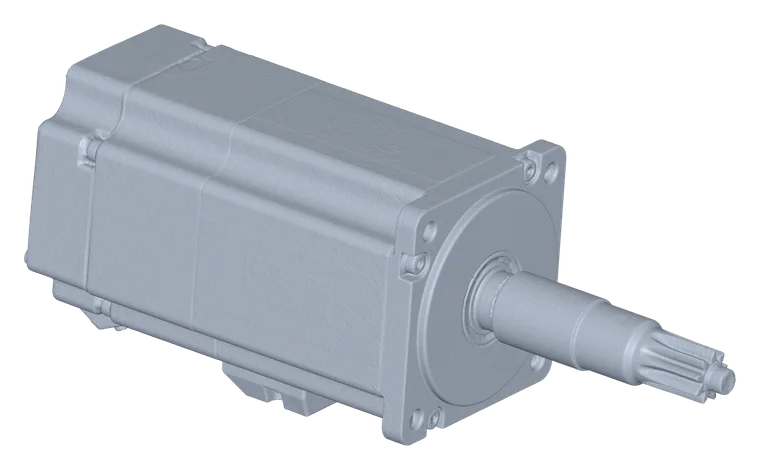
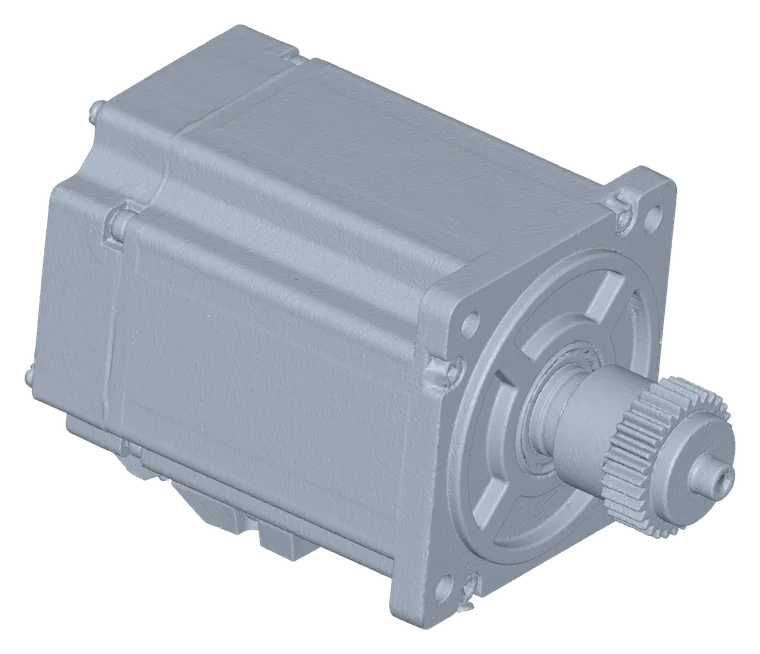
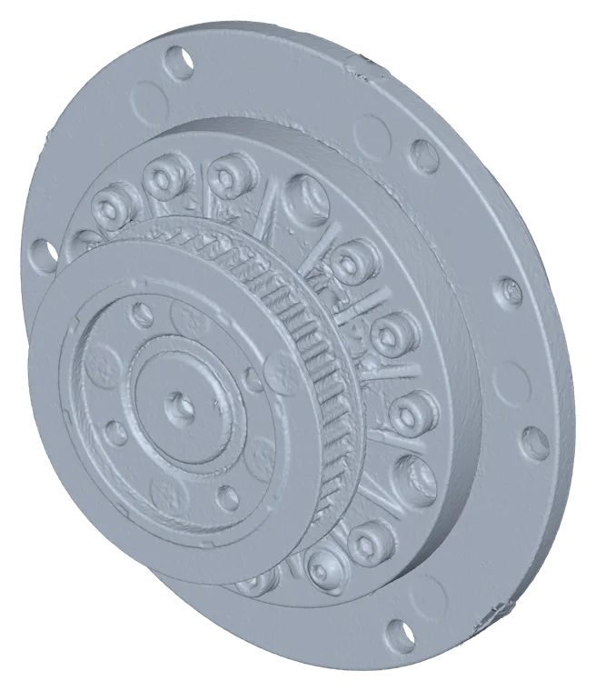
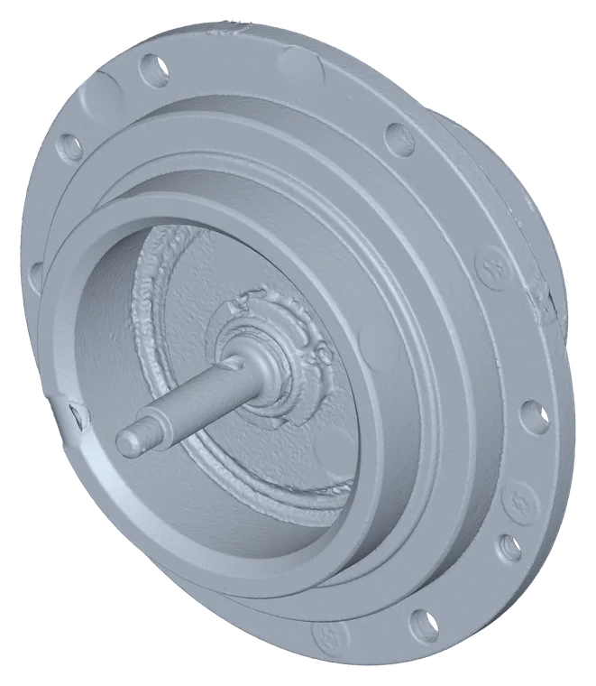
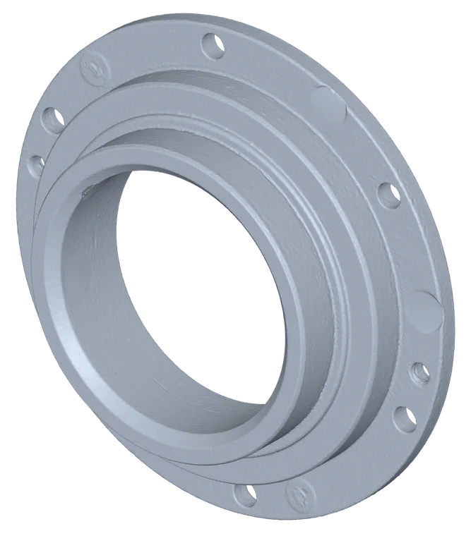
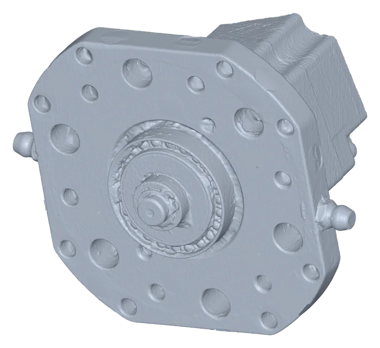